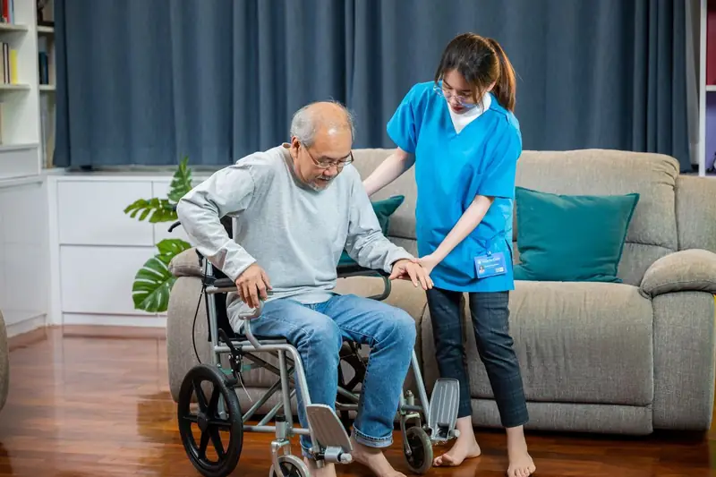

Quality healthcare at home
From recovery after surgery to managing ongoing conditions, our doctors, nurses and therapists bring care to your doorstep.

Medical care without the hospital queue
Doctor tele-consultations
Speak to a doctor by phone or video without leaving home.

Doctor visits at home
General physicians and specialists who examine you at home.

Nursing care
Trained nurses for injections, dressings, IV, catheter and post-operative care.
Caretaker support
Trained caretakers to help with daily activities, mobility and hygiene.

Physiotherapy
Home sessions for recovery after surgery, injury, stroke or long illness.

Lab tests at home
Sample collection at home, with reports shared digitally.

Medicine delivery
Prescribed medicines delivered to your door, with refill reminders.
Medical equipment
Hospital beds, wheelchairs, oxygen and other equipment on rent or sale.
Nutrition guidance
Diet plans for recovery, diabetes, heart health and healthy ageing.
Who home care helps most
Recovery after hospital
Professional monitoring and care at home for a smoother, safer recovery after surgery or a hospital stay.
Long-term conditions
Regular visits and monitoring for diabetes, BP, heart, kidney and other ongoing conditions.
Care without the travel
For anyone who finds it hard to travel to a hospital, or simply prefers care at home.
Booking care at home
Call or enquire
Tell us who needs care, where, and what kind of help is needed.
Assessment
A doctor or nurse understands the condition and suggests a care plan.
Care begins at home
Visits, nursing, therapy or tests are scheduled at times that suit you.
Regular updates
We monitor progress and keep you and your doctor informed.
Frequently asked questions
How soon can a doctor or nurse visit?
Most visits can be arranged within a day. Tell us how urgent your need is when you contact us and we'll do our best to schedule quickly.
Are your nurses and caretakers trained?
Yes. Our nurses are qualified, and our caretakers are trained in patient handling, hygiene and daily-care support.
Can I book physiotherapy for a few weeks?
Yes. We plan a course of sessions based on the therapist's assessment and your recovery goals.
Do you collect samples for lab tests at home?
Yes. A trained technician collects samples at home and reports are shared with you digitally.
Is home care in an emergency possible?
Home care is not a replacement for emergency services. In a medical emergency, call an ambulance or go to the nearest hospital.
Get care at home today
Tell us who needs care and we'll arrange the right professional.
- Registered office
- No. 102, E Block, SLV Karnataka Splendour Apartment, Harinagar Cross, Kothanur, Konanakunte, Bangalore – 560062, Karnataka
- Phone
- +91 97026 50245
- prateeksha@vitaniacare.com